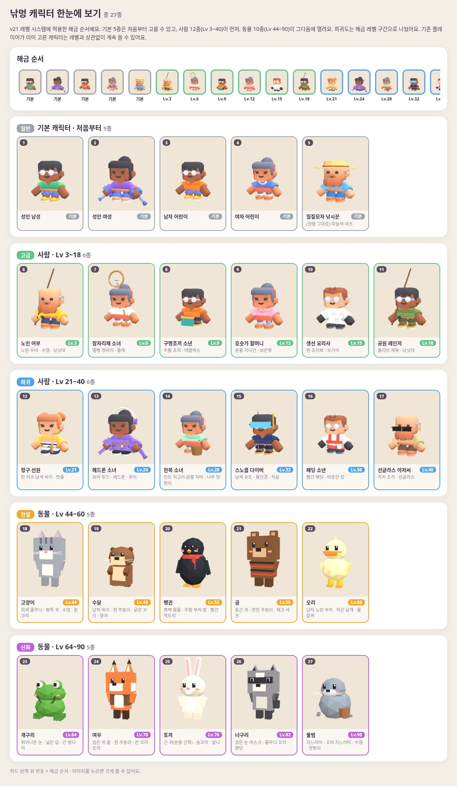

이미지를 누르면 크게 볼 수 있어요 (←/→, ESC). 1번 '적용 화면'만 게임에 들어갔고, 2~6번은 시안이에요.
캐릭터 페이지 열기 → 기본 5 · 사람 12 (Lv 3~40) · 동물 10 (Lv 44~90), 총 27종.

모두 InstancedMesh(인스턴싱)라 물고기 수와 상관없이 draw call이 고정이에요. 지금 호수 물고기 그림자가 1 call이에요.
| 시안 | 내용 | 물고기 draw call | v20 대비 |
|---|---|---|---|
| F0 | 지금: 어두운 그림자 16마리 (거의 안 보임) | 1 | ±0 |
| F1 | 색 있는 로우폴리 물고기 24마리 + 꼬리 흔들림(셰이더) | 1 | ±0 |
| F2 | F1 + 수면 물결 링 12개 | 2 | +1 |
| F3 | 도감 그림(2D) 물고기 24마리, 아틀라스 1장 | 1 | ±0 |
| F4 | 물고기 떼 5무리(40마리) + 가끔 점프·첨벙 | 3 | +2 |
지금 적용된 팝업은 v17 lB 그대로예요 (1번 적용 화면의 'Lv.10 레벨업').
지금 적용된 로드는 v17 lC 가로 노드형이에요 (레벨 배지를 누르면 열려요).